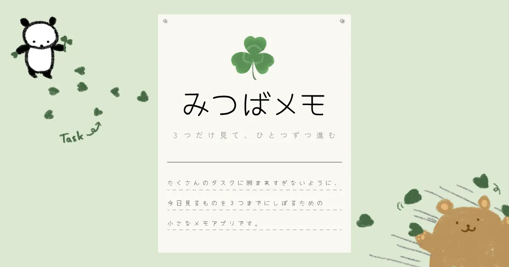

App
みつばメモ
3つだけ見て、ひとつずつ進む
みつばメモは、たくさんのタスクに囲まれすぎないように、今見るものを3つまでにしぼるための小さなメモです。

開発メモ
ADHD（注意欠如・多動症）などの特性や気分の波があると、やることを選ぶだけで疲れることがあります。
みつばメモは、タスクを増やすためではなく、見るものを減らすために作りました。 途中で止まっても、戻りやすいことを大切にしています。

App
3つだけ見て、ひとつずつ進む
みつばメモは、たくさんのタスクに囲まれすぎないように、今見るものを3つまでにしぼるための小さなメモです。

ADHD（注意欠如・多動症）などの特性や気分の波があると、やることを選ぶだけで疲れることがあります。
みつばメモは、タスクを増やすためではなく、見るものを減らすために作りました。 途中で止まっても、戻りやすいことを大切にしています。